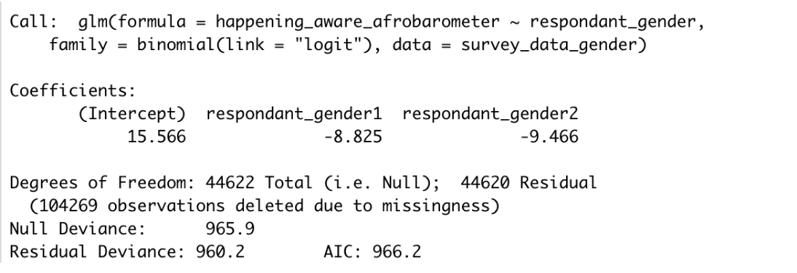
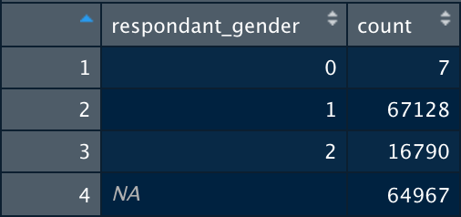

Update 3: Merging Demographics and Exploring Modeling
Contents
Update 3: Merging Demographics and Exploring Modeling¶
Concise Project Refresher¶
Our project is using approximately 140 surveys on climate opinion in order to determine how different demographics influence opinions on climate change. The surveys we are using are public data that ask a variety of questions on the importance and validity of climate change, as well as demographic variables of the respondent such as education level, income, race, age, and gender across multiple countries.
Monthly Efforts¶
For the past few weeks the team has been continuing to finalize our megapoll dataset and seeking out ways to standardize the demographic survey responses we’ve begun inserting into it. As a brief reminder, this is a comprehensive dataset which contains climate concern survey responses and the respondents’ demographic information. The demographic information needs to be standardized because they are coming from many different sources/surveys and not every question/answer is the same across all of them.
At this point we have gone through most of the surveys and extracted the relevant demographic data from them; the remaining surveys either do not have codebooks and/or we cannot discern from the associated .csv files what responses correspond to what questions, so as a group we met and agreed that in order to stay on track with our project timeline we would need to begin moving onto standardization and model training.
Thinking about how we’d exactly standardize the demographic variables of interest to us has been our primary task as of late and we’ve recently begun testing out some modeling approaches with both logistic and now linear regression.We started standardizing demographics based on the standardizations that were most attainable to finish. We have started with only standardizing gender, age, religion, and education level. We ultimately decided on dropping our interest in the Number of Children variable as a demographic because not enough surveys asked the question nor did we feel the insights we’d possibly gather from it would be worth the time investment in comparison to the other variables.
Model training for predicting one’s climate concern level based on demographic information is where we are yet to make much progress due to the sheer size of the dataprep task we were assigned. However since shifting gears for this quarter we have begun discussing ways in which to start building models off of our data.
Successes and Challenges¶
Our largest success by far was getting through about 90 percent of the surveys and beginning to brainstorm how to start standardizing the demographic variables of interest to our project. This achievement means that our group can finally begin prioritizing making actual analyses from the data and begin producing insights to compare with our established prior beliefs.
The following success was determining how to merge our demographic data with the existing climate concern data contained within the megapoll the ENVENT lab had already produced. We initially had been approaching this problem by thinking we’d need to somehow, line-by-line, hard code the demographic information into the megapoll by mimicking the R code structure responsible for merging all of the relevant climate concern information. After unsuccessfully attempting to figure out how we might go about that, a meeting with the professor who originally produced the code provided us with a simple solution. She suggested that instead of determining the precise locations we’d need to insert code we could simply reformat our demographic data to fit in the “questions-filtered” file. After a few trial runs we were able to get an output that contained not only climate concern responses but also the respondents’ gender. Much of our time and efforts since the last post have been in debugging this merge process and we anticipate that this will continue to take time as we move forward in working with the other demographic variables.
However, in this progress, we’ve also encountered some new challenges and unforeseen problems. To start, we’ve confirmed that some of the demographic variables will be more difficult to standardize than others. Demographics such as gender are use to recode as 1’s and 0’s.However with a category like race/ethnicity, we started to realize there are many different tags to be accounted for in the re-coding process, and what remains is the question of how to represent respondents who are multi-ethnic and identify as such? If we were to pick one of their multiple races, we would be ignoring other aspects of their identity. However, if we categorize them as mixed, our results may not be as informative. We are still wrestling with how to tackle these issues as we proceed with our preliminary attempts with merging age, religion, and education in.
Our attempts to create a logistic regression model with the gender demographic revealed to us an extremely important error that is present in our data. We ran a logistic regression model in R that produced the following: 
When interpreting our results, the model revealed that men were much more likely to be pro climate than women. We were a bit confused with these results as the predictions we made before starting the project were that women would be more pro climate. We investigated the data a bit more to see if there was something we were missing and found an error in our data.
When merging our data into the megapoll, only surveys that started with the letters A-C were imported. Along with that, the ratio of male to female respondents was completely inaccurate. Total survey respondents were approximately ¼ female and ¾ male. We have included our realization of the error below:  ( Male is encoded as 1 and Female is encoded as 2)
We believe this to be part of the reason as to why our results are currently inaccurate. We have yet to identify what specifically in the merged file is causing this error, but plan to run a new linear regression model when we do.
Final Goals¶
By the end of next month we will have our predictive models ready and be able to analyze/draw conclusions on how each demographic variable contributes towards climate change opinions. We still have a few more models to try as we just got some more insight from our mentor. Alongside a linear regression model, we plan to explore other models such as SVM to determine which model best classifies our data. For each demographic we plan to explore different models to gain the highest accuracy and are also hoping to build a model that incorporates multiple demographics.
Despite spending a lot of time building our dataset, our work with these variables will not be going to waste. The efforts we have put forth into demographic variables that we ended up not using ( i.e. number of children, race, and income) will eventually be used by future collaborators who work on a project in tandem with the ENVENT Lab at UCSB.